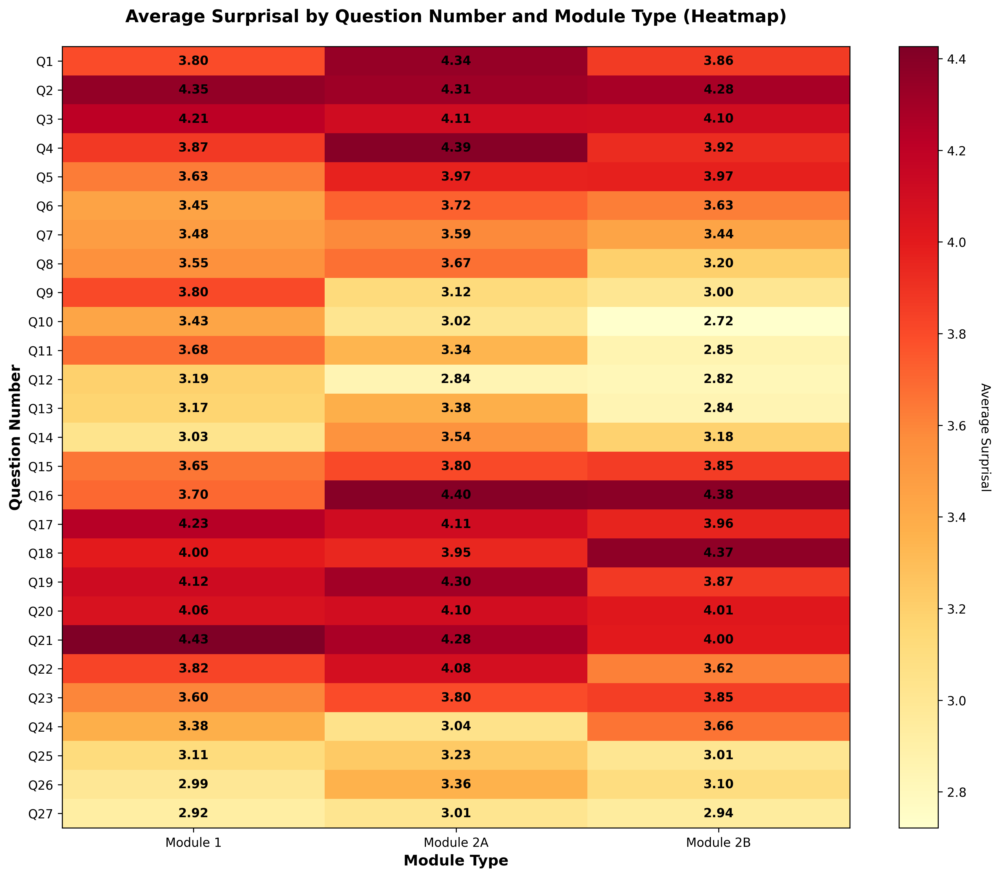

Generating SAT Practice Exams
Deconstructed the statistical structure of College Board SAT practice exams to reveal predictable patterns. Built an algorithm using Mixed Integer Linear Programming to generate up to 500 million unique practice exams.
View Dashboard